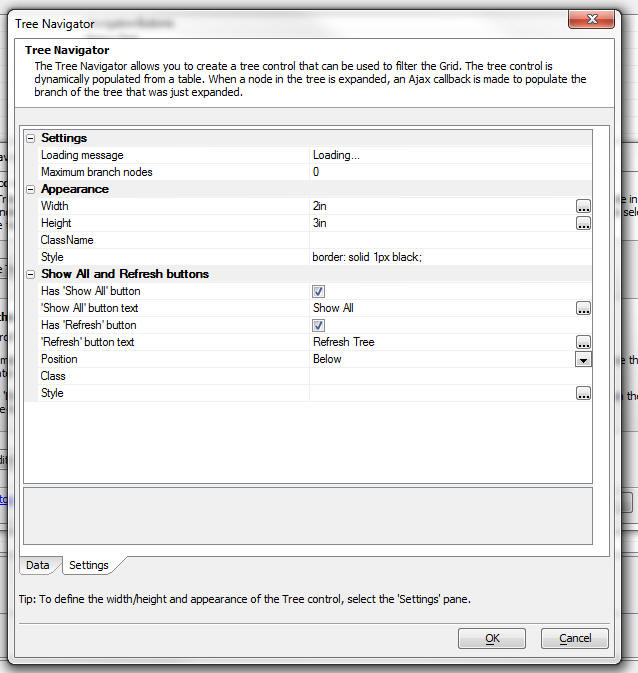

Grid Component - Tree Control Navigator - Refresh
refreshExternalTreeNavigator Method
If you have placed a Tree Control Navigator on the Grid, you can now force an Ajax callback to repopulate the Tree.The Grid Object now has a new method: .refreshExternalTreeNavigator()
For example, you could have a button on the Grid with this code:
{grid.Object}.refreshExternalTreeNavigator()
Refresh Tree Button
You can now set a property in the builder to add a 'Refresh' button to the Tree Control Navigator
When the tree control renders, it will have a button under the Tree to force a refresh.